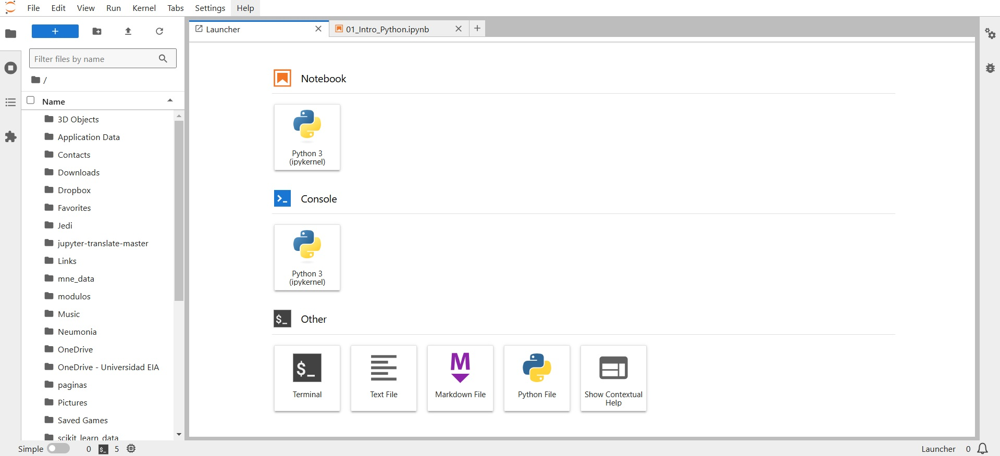
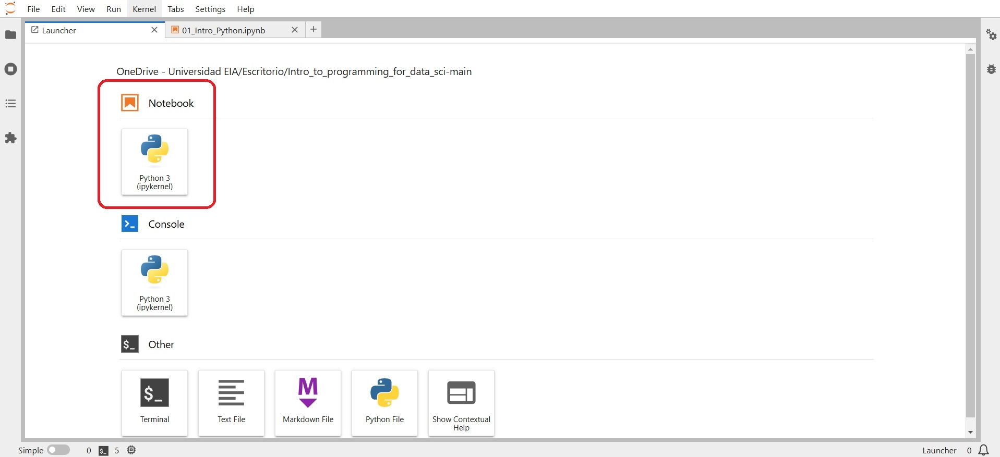
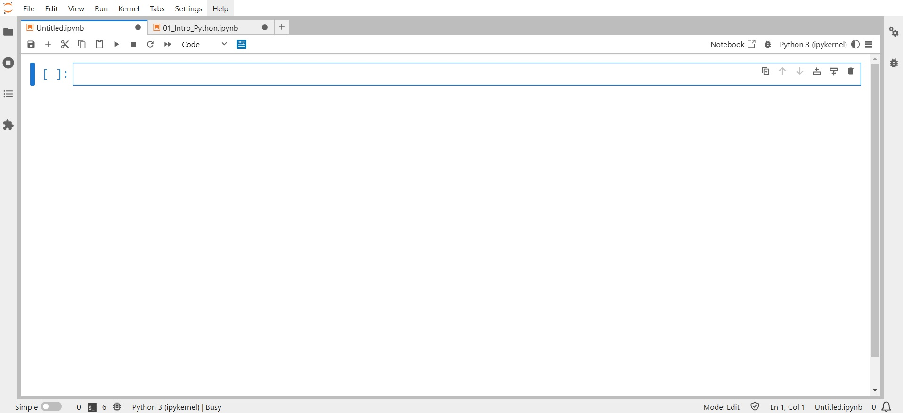
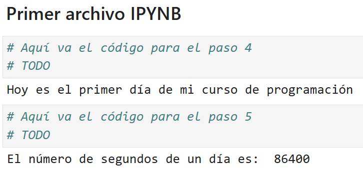
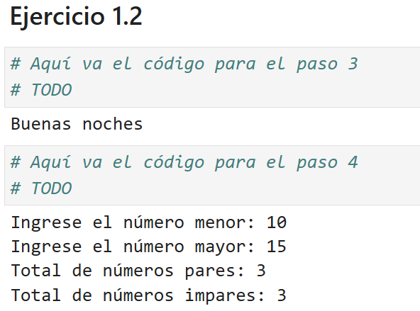

#Este código suma 3 + 5
3 + 51 Introducción a Python
Objetivo
Esta clase es una introducción muy breve al lenguaje Python y el entorno Jupyter Notebook. Solamente abordaremos el contenido relevante para aplicar Python para analizar datos.
Instalación y configuración del entorno
Si es nuevo en Python, le recomendamos descargar el instalador de Anaconda y seguir las instrucciones de instalación. Es importante notar que se recomienda instalar para el perfil de usuario local, no para todos los usuarios. Una vez instalado, usaremos la interfaz de Jupyter Notebook para escribir código.
Jupyter no es el único IDE disponible para desarrollar Notebooks, tambien se puede usar Google Colab o VS Code.
1.1 Jupyter notebook
1.1.1 Introducción
Jupyter notebook es una plataforma interactiva donde se puede escribir código y texto y realizar visualizaciones. Puede acceder a Jupyter Notebook desde Anaconda Navigator o abrir directamente la aplicación (no recomendado). Debería abrirse automáticamente en su navegador predeterminado. La siguiente figura muestra un Notebook abierto con Google Chrome, usando la interfaz JupyerLab.

Para crear un nuevo Notebook, haga clic en el botón Python 3 (ipykernel), como se muestra en la figura.

Debería ver un Notebook en blanco como se muestra en la siguiente figura.

1.1.2 Escribir y ejecutar código
Celda de código: De forma predeterminada, una celda es del tipo Code,
es decir, para escribir código. Intente escribir una línea de código Python (por ejemplo,
2+3) en una celda de código vacía y ejecútela presionando Shift+Enter.
Esto debería ejecutar el código y crear una nueva celda de código. Al presionar Ctlr+Enter
para Windows (o Cmd+Enter para Mac) se ejecutará el código sin crear una nueva celda.
Comentar código en una celda de código: Se deben realizar comentarios mientras se escribe el código para explicar su propósito o añadir una breve explicación de las tareas que realiza el mismo. Se puede agregar un comentario en una celda de código precediéndolo con un signo #. Por ejemplo, vea el comentario en el código siguiente.
Escribir comentarios ayudará a otros usuarios, y a usted mismo, a comprender su código y realizar un seguimiento de las tareas que se realizan.
Celda Markdown: Aunque se puede escribir un comentario en una celda de código, una celda de código no se puede utilizar para escribir títulos o subtítulos y no es apropiada para escribir fragmentos de texto largos. En tales casos, cambie el tipo de celda a Markdown en el menú desplegable. Utilice cualquier hoja de referencia que encuentre en línea, por ejemplo esta, para dar formato al texto en las celdas Markdown.
1.1.3 Guardar y cargar Notebooks
Guarde el Notebook haciendo clic en “File” y seleccionando “Save Notebook” o “Save Notebook As”. El Notebook se guardará como un archivo con una extensión ipynb. Este archivo contendrá todo el código, así como los resultados, y un usuario de Jupyter puede cargarlo y editarlo. Para cargar un Notebook de Jupyter existente, navegue hasta la carpeta en la que se encuentra guardado, usando el navegador en la izquierda (el ícomo de carpeta) y luego haga clic en el archivo para abrirlo.
1.2 Conceptos básicos del lenguaje Python
1.2.1 Asignar nombre de variable a un objeto
Cuando a un objeto se le asigna un nombre de variable, el nombre de la variable sirve como referencia al objeto. Por ejemplo, considere la siguiente tarea:
x = [5,3]El nombre de la variable x es una referencia a la ubicación de memoria donde está almacenado el objeto [5, 3]. Ahora, supongamos que asignamos x a una nueva variable y:
y = xEn la declaración anterior, el nombre de la variable y ahora se refiere al mismo objeto [5,3]. El objeto [5,3] no se copia a una nueva ubicación de memoria referida por y. Para probar esto, agreguemos un elemento a y:
y.append(4)
print(y)print(x)Cuando cambiamos y, observe que x también cambió al mismo objeto, lo que muestra que x y y se refieren al mismo objeto, en lugar de referirse a diferentes copias del mismo objeto.
1.2.2 Importar bibliotecas
Hay varias funciones integradas en Python como print(), abs(), max(), sum() etc., que no requieren importar ninguna biblioteca. Sin embargo, estas funciones normalmente serán insuficientes para analizar datos. Algunas de las bibliotecas populares y sus propósitos principales son los siguientes:
- NumPy: Realizar operaciones numéricas y almacenar datos numéricos de manera eficiente.
- Pandas: Lectura, limpieza y manipulación de datos.
- Matplotlib, Seaborn: Visualización de datos.
- SciPy: Realizar computación científica como resolución de ecuaciones diferenciales, optimización, pruebas estadísticas, etc.
- Scikit-learn: Preprocesamiento de datos y aprendizaje automático, con enfoque en la predicción.
- Statsmodels: Desarrollo de modelos estadísticos centrados en la inferencia
Se puede importar una biblioteca usando la palabra clave import. Por ejemplo, la biblioteca NumPy se puede importar como:
import numpy as npUsando la palabra clave as, a la biblioteca NumPy se le ha dado el alias np. Todas las funciones y atributos de la biblioteca se pueden llamar usando el prefijo np.. Por ejemplo, generemos una secuencia de números enteros hasta 10 usando la función NumPy arange():
np.arange(8)1.2.3 Objetos integrados
Hay varios objetos, módulos y funciones integrados en Python. Abajo hay algunos ejemplos:
Objetos escalares: Python tiene algunos tipos de datos integrados para manejar objetos escalares como números, cadenas, valores booleanos y fecha/hora. La función incorporada type() se puede utilizar para determinar el tipo de datos de un objeto:
var = 2.2
type(var)Fecha y hora: Python tiene un módulo integrado datetime para manejar objetos de fecha/hora:
import datetime as dtdt_object = dt.datetime(2022, 9, 20, 11,30,0)Se puede acceder a la información sobre la fecha y la hora con el atributo relevante del objeto datetime.
dt_object.daydt_object.yearEl método strftime del módulo datetime formatea un objeto datetime como una cadena. Existen varios tipos de formatos para representar la fecha como una cadena:
dt_object.strftime('%m/%d/%Y')dt_object.strftime('%m/%d/%y %H:%M')dt_object.strftime('%b-%d-%Y')range(): La función range() devuelve una secuencia de valores enteros espaciados uniformemente. Se usa comúnmente en bucles for para definir la secuencia de elementos sobre los cuales se realizan las iteraciones.
A continuación se muestra un ejemplo donde se utiliza la función range() para crear una secuencia de números enteros hasta 10:
print(list(range(1,10)))1.2.4 Control de flujo
Como en otros lenguajes, Python tiene palabras clave integradas que proporcionan un control de flujo condicional o cíclico en el código. Este es tema de la próxima clase, pero acá veremos un breve abrebocas.
If-elif-else: La declaración if-elif-else puede verificar varias condiciones y ejecutar el código correspondiente a la condición que es verdadera. Tenga en cuenta que puede haber tantas declaraciones elif como sea necesario (proceso tedioso que a partir de Python 3.10 se resolvió con la sentencia match-case
x = float(input('Ingrese un número:'))
if x>0:
print('El número es positivo')
elif x==0:
print("El número es cero")
else:
print("El número es negativo")
print('Esta es la última condición evaluada')for: Un ciclo for itera sobre los elementos de un objeto iterable y ejecuta las declaraciones dentro del ciclo en cada iteración. Por ejemplo, a continuación se muestra un ciclo for que imprime números naturales impares hasta 10:
for i in range(10):
if i%2!=0:
print(i)Esto se puede hacer de forma más eficiente si se hace un llamado a la función range() con diferentes parámetros. Consulte la documentación para entender mejor su funcionamiento.
while: Un ciclo while itera sobre un conjunto de declaraciones mientras se cumpla una condición. Por ejemplo, a continuación se muestra un bucle while que imprime números impares hasta 10:
i=0
while i<10:
if i%2!=0:
print(i)
i=i+11.3 Ejercicios prácticos
1.3.1 Ejercicio práctico 1
- Cree un nuevo Notebook.
- Guarde el archivo como Ejercicios_practicos_clase_1.ipynb.
- Asigne un título H1 al archivo: primer archivo IPYNB.
- Imprimir Hoy es el primer día de mi curso de programación.
- Calcule e imprima el número de segundos que tiene un día.
El archivo debe lucir como en la siguiente imagen

1.3.2 Ejercicio práctico 2
- Para este ejercicio use el mismo Notebook del ejercicio práctico 1.1 (Ejercicios_practicos_clase_1.ipynb).
- Genere otro título H1 en el archivo: Ejercicio 1.2.
- Importe la biblioteca
datetimecon un alias diferente adt, cree un objeto fecha/hora y acceda a los datos de la hora. A continuación, cree un control de flujo que, con base en el objeto creado, salude al usuario con buenos días, buenas tardes o buenas noches, de acuerdo a la hora del objeto. - Cree un programa que solicite al usuario dos números enteros y cuente los números pares e impares que hay entre ellos, ambos números inclusive. Al finalizar el ciclo, se deben imprimir los resultados
Esta parte del archivo debe lucir como en la siguiente imagen
